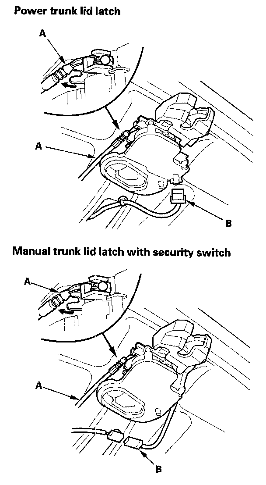
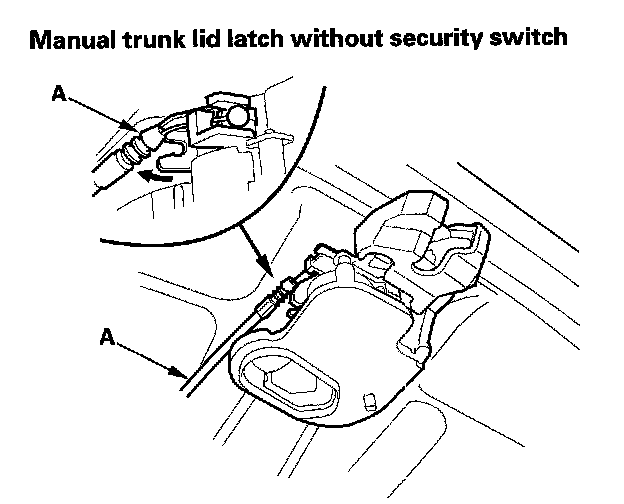
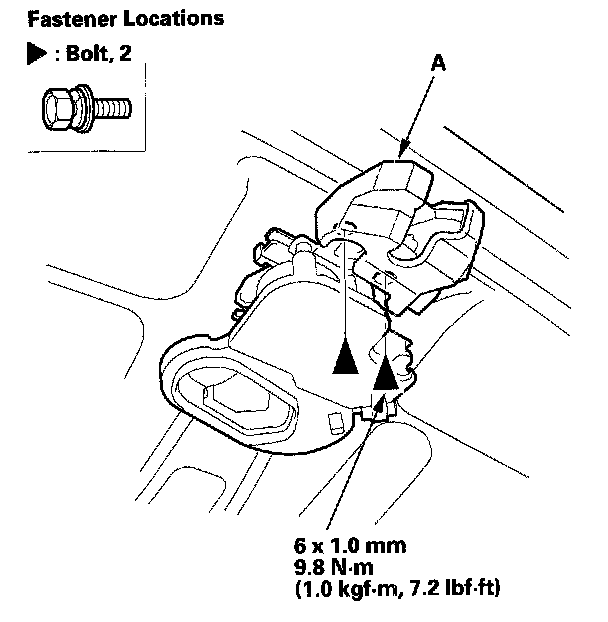
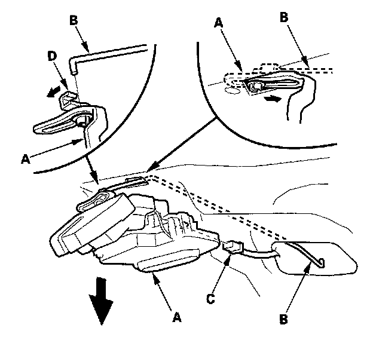
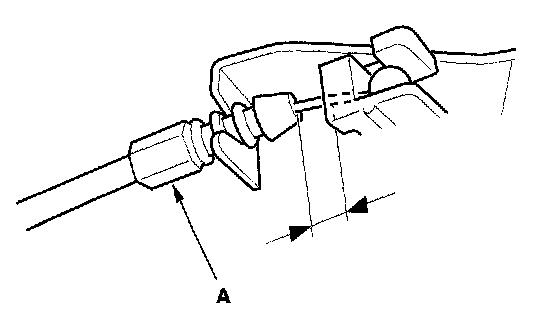

Trunk / Liftgate Latch: Service and Repair
Trunk Lid Latch Replacement1. 4-door: If equipped, remove the trunk lid trim.
2. Disconnect the cylinder rod from the lock cylinder.


3. Disconnect the trunk lid opener cable (A), and on power trunk lid latch model and security switch model, disconnect trunk lid latch switch connector (B). Take care not to bend the opener cable.

4. Remove the bolts from the trunk lid latch (A).

5. Pull the trunk lid latch (A) out, and disconnect the cylinder rod (B) from the trunk lid latch, and on no security switch model, disconnect the latch switch connector (C) Take care not to bend the cylinder rod.
NOTE: Check for damaged or stress-whitened rod fastener (D).

6. Install the latch in the reverse order of removal, and note these items:
- Replace the rod fastener if it is damaged.
- Make sure the connector is plugged in properly and the opener cable is connected properly.
- Make sure the trunk lid opens properly and locks securely.
- Fix the original position of the outer end of cable (A) on the trunk lid latch securely. And check the trunk lid latch operation:
Make sure the trunk lid latch unlock when pulling the trunk lid opener/fuel fill door opener. If necessary, adjust the position of the cable end.